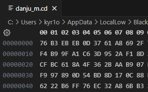

How To Save Your Game
It's been a while since my last blog post, even though I added
React support to this blog and updated some styles last
year, like the new Friends.
To show this site is still alive, let me write some random words here.
I've written this article to document details for my own reference, but I do not support any form of game hacking.
In my spare time, I've played many games, and some have a difficulty system where you must clear the previous difficuty to unlock the next. This makes sense for truly challenging games, but for others, it just means wasting time on easy levels to access the harder ones. Cluckmech Oasis (鸡械绿洲), for example, requires at least 15 hours to unlock the final difficulty. That's why I tried to hack its save file.
Cluckmech Oasis
What we have
Most steam games will store its data under
C:\Users\<username>\AppData\, for
Cluckmech Oasis, it is
AppData\LocalLow\BlackLight\Cluckmech Oasis.
After some basic investigation, I'm sure the saving files are
danju_m.cd and quanju_m.qjcd. Additionally, we
have player.log to provide more information..
Guess
If the save file is plain text, congratulations! You can modify it directly, and you're done.
However, danju_m.cd and quanju_m.qjcd are
binary files.

After checking the player log, I found:
1 | Odin Serializer ArchitectureInfo initialization with defaults (all unaligned read/writes disabled). |
This indicates that the game deletes the save file copy after
initializing the serializer. It's reasonable to guess that the save file
is serialized using Odin
Serializer. Therefore, I installed Odin and tried to
deserialize it, but encountered an Invalid Data Stream
error.
There are two possible reasons for this:
- The save files are not serialized by Odin.
- The save files are encrypted.
Regardless of the reason, if guesses don't work, we need RE.
Reverse
Cluckmech Oasis is developed in Unity, so its main logic
should be located in a file like *Assembly*.dll. It wasn't
hard to find
鸡械绿洲\Cluckmech Oasis_Data\Managed\Assembly-CSharp.dll,
and I loaded it into IDA. An interesting point is that
IDA couldn't show the function names properly, likely
because the original function names are in Chinese — an obfuscation
technique, perhaps.
Fortunately, I was lucky enough to find the "saving file encrypt key" in the code, which means the save files are encrypted.
At this point, my friend @plusls told me that
using IDA for C# reverse engineering is
foolish and recommended dotPeek instead. Thanks to that
advice, I found it much easier to view the code in dotPeek.
I quickly discovered that the save files are encrypted using a library
called ES3 (Easy Save 3).
With a parser for ES3
that I found online and the encryption key I found in IDA,
I was able to get everything I needed.
More
If I found new game with encrypted saving file, I may update here.